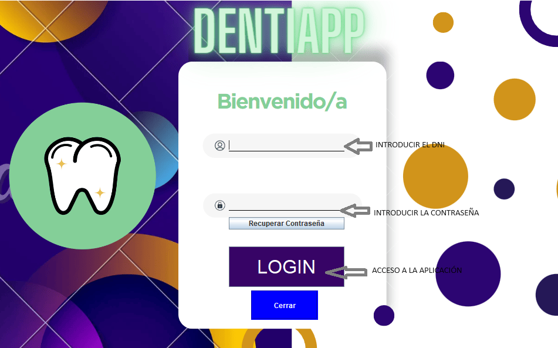

Ayuda: Login

Los siguientes pasos le guiarán a través del proceso de realizar el login :
- Introducir el DNI: Desde la pantalla,
seleccionaremos el campo e introduciremos nuestro DNI.
- Introducir la contraseña: Desde la pantalla,
seleccionaremos el campo e introduciremos nuestra contraseña.
- Login: Una vez que haya rellenado los campos
necesarios pulse el botón "Login" para acceder a la aplicacion.
- Recuperar contraseña: Al pulsar el boton se enviará un correo para que recupere su contraseña.
Si tiene alguna pregunta o necesita ayuda adicional,
no dude en comunicarse con nosotros.